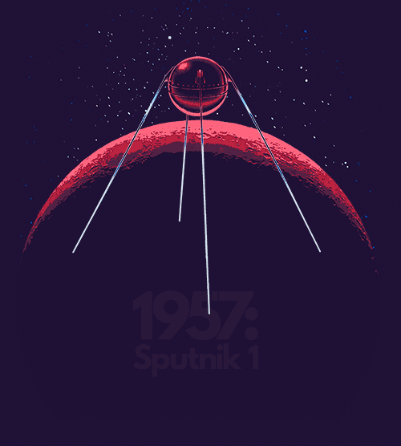

Интересные факты

- В журнале «Радио» для радиолюбителей были заранее напечатаны инструкции по приему «сигнала из космоса» от ПС-1.
- Расчеты координат спутника с привязкой по времени занимали у ученых 30-60 минут. Сегодня аналогичные вычисления посредством компьютера проводились бы за 1-2 секунды.
- К 50-летию Спутника-1, 4-го октября 2007-го года в наукограде Королев на проспекте Космонавтов был установлен памятник «Первому искусственному спутнику Земли».
- Старт космической гонки вынудил США создать НАСА.
- Запуск Спутника-1 повлиял на создание DARPA и Интернета. В ответ на успешный запуск ПС-1 с дальнейшей перспективой создания новой сети вещания, США в 1957-м году создают Агентство передовых исследовательских проектов (ARPA). В случае войны США также хотели иметь надежную систему передачи информации на дальние расстояния, в результате чего начали разработку компьютерной сети. 5-го декабря 1969-го года сеть ARPANET объединила три университета и исследовательский центр. Позже эта технология была реализована в CERN и переросла в итоге во Всемирную паутину.